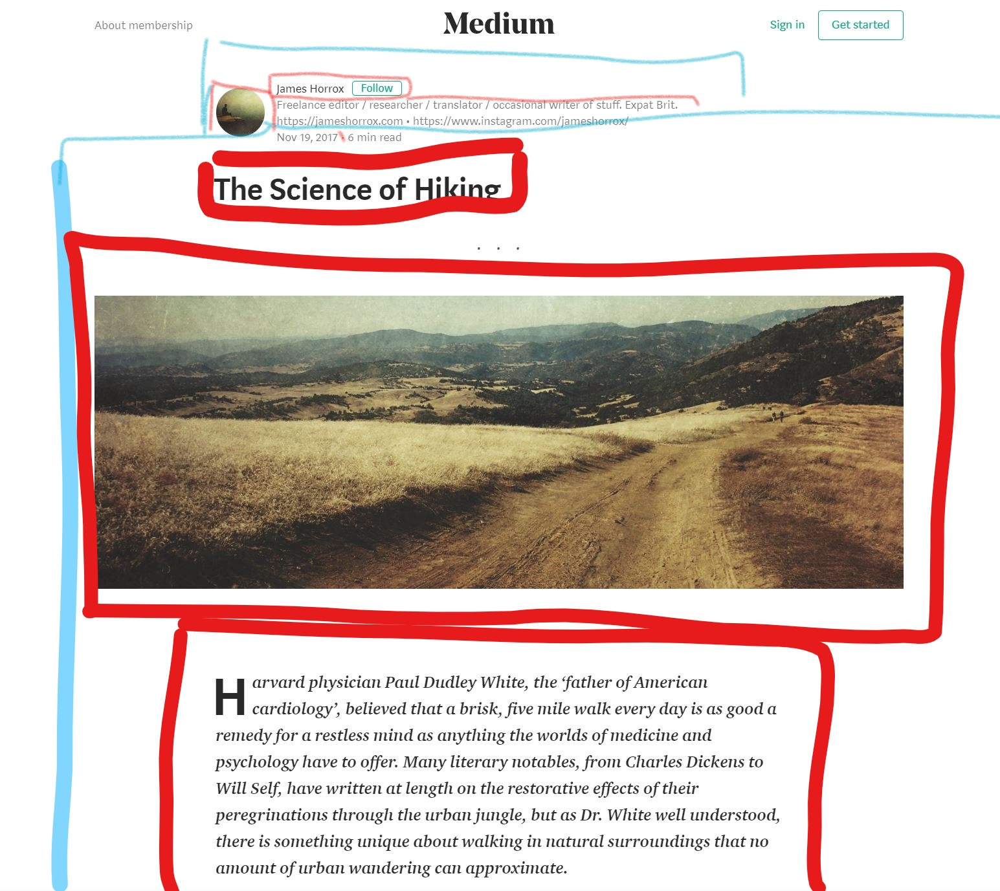
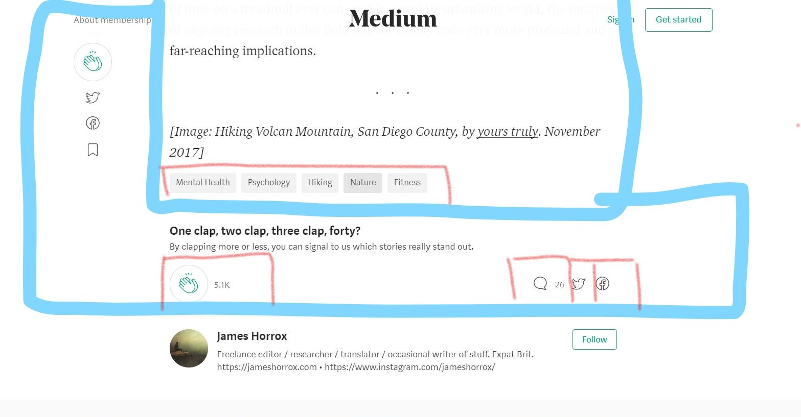

Data Design
Persona - Tiberius Calabrese
Tiberius Calabrese is an airline pilot who loves to keep his mind occupied with by learning the basics of new things. He is a fairly experienced user and will be using a Samsung Galaxy S8. He has turned to Medium in order to read blog posts on his phone instead of bringing books with him on his flights. He's become particularly interested in medical science and human nature but has no interest in writing a blog himself.
User Story
Casual user, Tiberius, wants to find more articles on medicine and humanity. He would also like to find authors whose writing he enjoys.
Use Case and Interaction Flow
- Tiberius types "medicine" and "humanity" into the search bar on Medium.
- The site brings up articles including the tags "medicine" and "humanity".
- Tiberius recognizes the article he read in the past and clicks on it.
- The site takes him to this specific article.
- Tiberius decides to clap a few times in order to show his appreciation.
- The site registers these claps and adds them to the total number of claps on the article.
- Tiberius would like to follow this author so that he doesn't miss any of his articles.
- He clicks on the "follow" button.
- The site prompts him to sign in or create an account.
- He enters in his relevant info in order to create an account(email, username, etc).
- The site checks that this information is valid and available and creates Tiberius' account.
- Tiberius clicks the "follow" button again and successfully follows Dr. McCoy.

